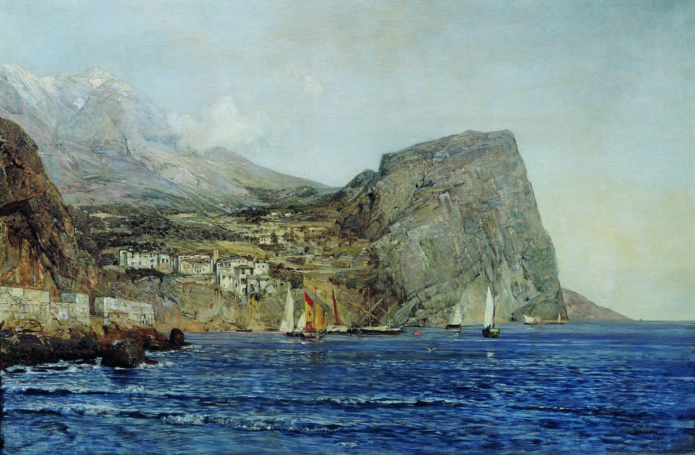
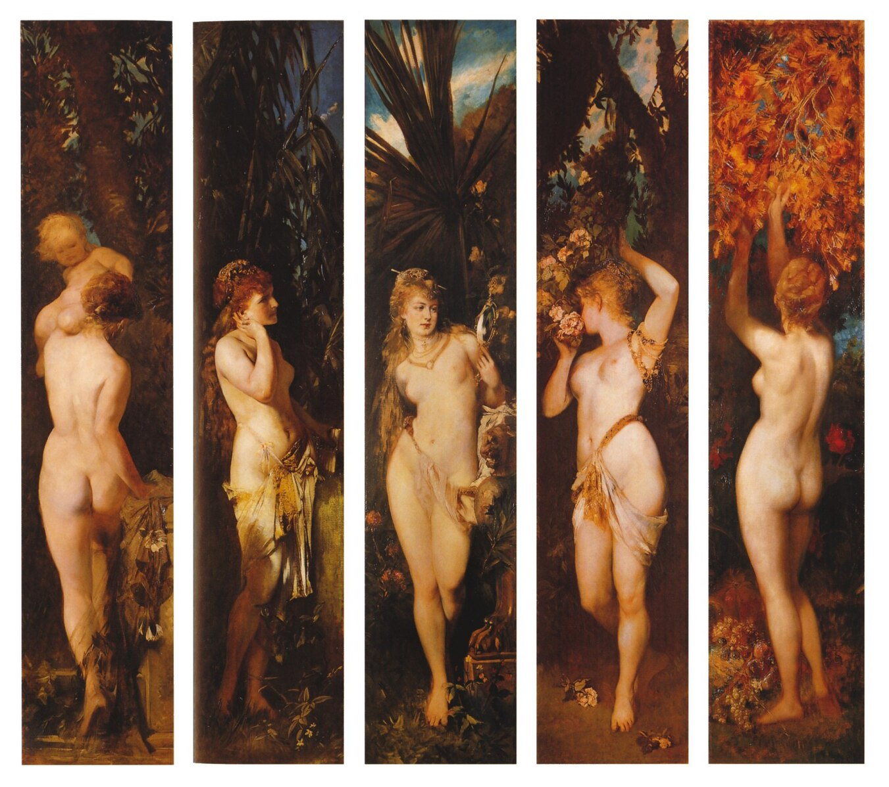
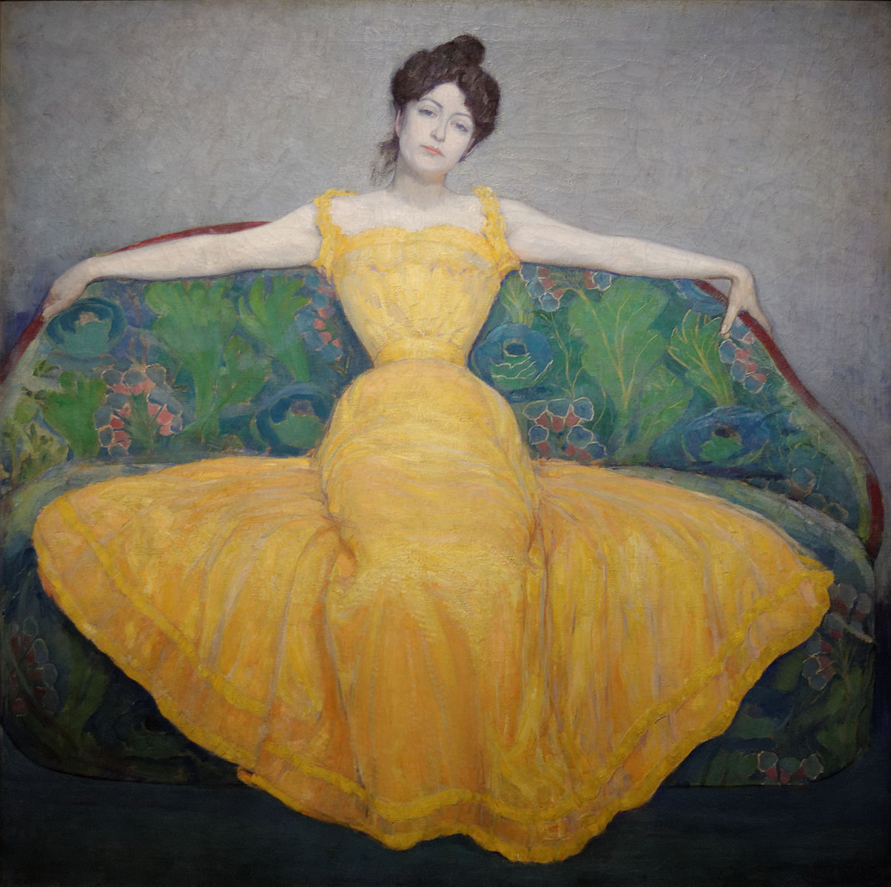
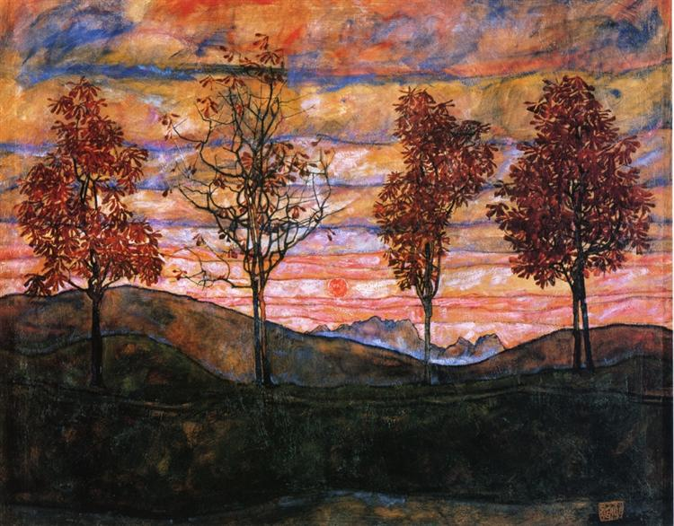
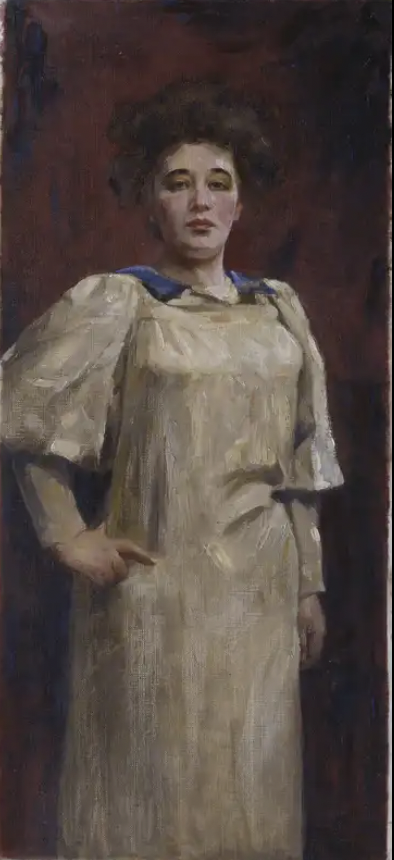
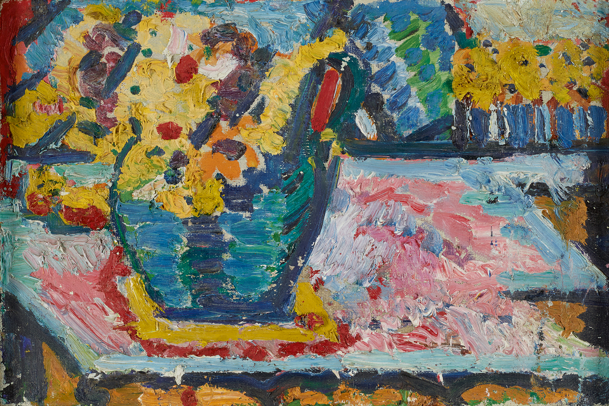
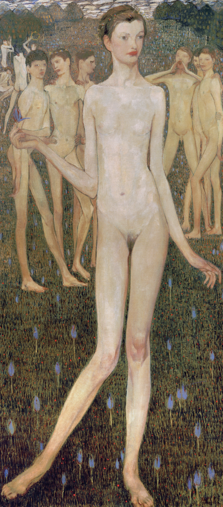

Explore the evolution of Austrian art from Enlightenment sculpture to Viennese Modernism. Follow artworks in chronological order and discover how styles transformed across centuries.












